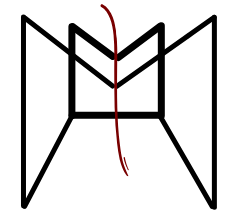

<router-outlet></router-outlet>
 
<!-- componente menú, scss para animaciones, componente para navegación y componente para authenticación 
  el menú será el mat toolbar luego un div para el nombre y el logo y usar flex, luego en medio otro div para la navegación
  y un div para la autenticación, el div de la autenticación será un botón de login y un botón de registro y poco mas, el boton de salir 
  será un botón de cerrar sesión
-->
<p>
  <mat-toolbar>
    <div class="mat-toolbar__title">
      <span>Maot Application</span>
    </div>
    <div>
      <!--  -->
      <i class="mat_toolbar__icon  icon-logoMaot"></i>
    </div>
    
  </mat-toolbar>
</p>
